L'orange indique la présence de glucose (sucre)
Le tube n°4 correspond à la bière post-fermentation, le reste correspond à la pré-fermentation.

(observation au microscope optique x400)

En présence d'amidon la solution se colore en bleu foncé. Le premier tube correspond à de l'eau mélangée avec du malt et les autres à différentes étapes du brassage. La dernière correspond à la bière post-fermentation.

(D’après les calculs, il y en a 4g/L)
Le rendement global de notre bière est de 66,4% ce qui est considéré comme un rendement moyen. Le rendement de brassage correspond au pourcentage de sucre qu’on a réussi à utiliser par rapport à la quantité de sucres présent initialement dans le malt.